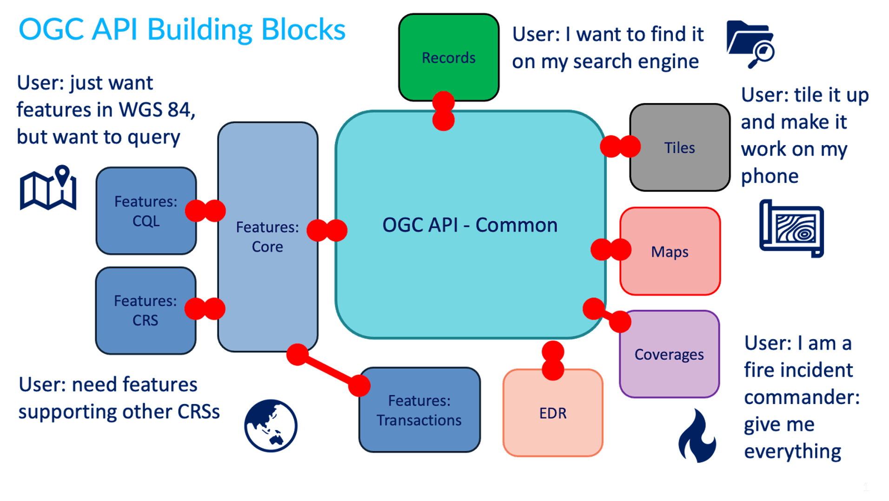
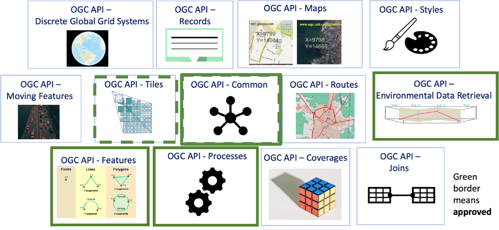

Overview
This section provides a high level overview of pygeoapi standards support.
Standards
Open standards are core to pygeoapi. Open standards allow for broad interoperability and plug and play capability. pygeoapi supports a number of open standards (both formal and defacto or community driven).
API standards
OGC API
pygeoapi implements the OGC API suite of standards from the Open Geospatial Consortium (OGC). From the OGC API website:
Cite
The OGC API family of standards are being developed to make it easy for anyone to provide geospatial data to the web. These standards build upon the legacy of the OGC Web Service standards (WMS, WFS, WCS, WPS, etc.), but define resource-centric APIs that take advantage of modern web development practices. This web page provides information on these standards in a consolidated location.
These standards are being constructed as "building blocks" that can be used to assemble novel APIs for web access to geospatial content. The building blocks are defined not only by the requirements of the specific standards, but also through interoperability prototyping and testing in OGC's Innovation Program.
OGC API - Common
OGC API - Common is a common framework used in all OGC API's. OGC API - Common Common provides the following functionality:
- based on OpenAPI 3.0
- HTML and JSON as the dominant encodings, alternative encodings are possible
- common and shared endpoints such as:
/(landing page)/conformance/openapi/collections/collections/foo
- common aspects such as pagination, links between resources, basic filtering, query parameters (
bbox,datetime, etc.)
OGC API - Common allows for specification developers to focus on the key functionality of a given API (i.e. data access, etc.) while using common constructs. This harmonizes OGC API standards and enables deeper integration with less code. This also allows for OGC API client software to be more streamlined.
The /conformance endpoint indicates which standards and extensions are supported by a deployment of OGC API.
OGC API building blocks
The OGC API approach allows for modularity and "profiling" of APIs depending on your requirements. This means you can mix and match OGC APIs together.

You can read more about this topic in the building blocks website.
More OGC APIs
The OGC API effort is rapidly evolving. Numerous OGC API standards are in development, and will be implemented in pygeoapi over time:
- Maps can serve spatially referenced and dynamically rendered map imagery
- Routes provides access to routing data
- Styles defines a Web API that enables map servers, clients as well as visual style editors, to manage and fetch styles
- 3D GeoVolumes facilitates efficient discovery of and access to 3D content in multiple formats based on a space-centric perspective
- Moving Features defines an API that provides access to data representing features that move as rigid bodies
- Joins supports the joining of data, from multiple sources, with feature collections or directly with other input files
- Discrete Global Grid System enables applications to organise and access data arranged according to a Discrete Global Grid System (DGGS)

OGC APIs supported by pygeoapi
pygeoapi is an OGC API Reference Implemetnation and implements numerous OGC API standards.
| Standard | pygeoapi status | Included in this workshop |
|---|---|---|
| OGC API - Features | Reference | ✅ |
| OGC API - Coverages | Implementing | ✅ |
| OGC API - Tiles | Implementing | ✅ |
| OGC API - Processes | Implementing | ✅ |
| OGC API - Records | Implementing | ✅ |
| OGC API - Environmental Data Retrieval | Implementing | ✅ |
| OGC API - Routes | Planned | |
| OGC API - Maps | Planned | |
| OGC API - Styles | Planned |
In the next section we will dive into the dedicated API's related to specific types of information. You will notice that all APIs are combined and available via a single OGC API endpoint, thanks to OGC API - Common.
OpenAPI
Core to OGC API - Common is the OpenAPI initiative to help
describe and document an API. OpenAPI defines its structure in an OpenAPI document.
OGC API - Common suggests this document to be located at /openapi. With pygeoapi in a browser
this URL opens an interactive HTML page which facilitates
an API query. Append ?f=json to view the document in JSON. The OpenAPI document indicates which
endpoints are available in the service, which parameters it accepts and
what types of responses can be expected. The OpenAPI document is a similar concept to Capabilities
XML as part of the first genration OGC Web Service standards.
OpenAPI Specification parsing in a browser
A common approach to interact with Open API's using json is to use a program like Postman. Also there are browser plugins which enable to define api requests interactively within a browser. For firefox download the plugin poster. For Chrome and Edge use Boomerang. In Boomerang you can create individual web requests, but also load the open api specification document and interact with any of the advertised endpoints.
The OpenAPI community provides various tools, such as a validator for OAS documents or generate code as a starting point for client development.
Content and format standards
JSON is core in pygeoapi, providing a format that is machine readable and easy to parse and handle by client software and tools. OGC API - Common provides uniform JSON formats for the various endpoints it supports. Specific OGC API standards may specify domain specific formats (for example, GeoJSON for OGC API - Features, GeoTIFF for OGC API - Coverages) depending on the data type(s).
pygeoapi specific conventions
pygeoapi provides some conventions that are not put forth by OGC API standards, however facilitate some features and capabiliteis.
the f parameter
The f parameter can be used with any pygeoapi endpoint to specify an output format for a given
API request. Examples are f=html, f=json, etc.
Using a web browser to access OGC API
Use your web browser to navigate to demo.pygeoapi.io. A browser by default opens
any OGC API in HTML (as a webpage) due to the accept header
sent by the browser (text/html). On the right top corner you will notice a JSON link. The link
adds the parameter to the url: f=json, which is a mechanism of pygeoapi to override the accept
header sent by the web browser.
Note
When calling an OGC API from javascript, and the aim is to receive json. You can use the ?f=json pygeoapi convention, or the content
negotiation as provided by the standard; include a header accept:"application/json" in your request.
In jquery for example, this is represented by the dataType property
1 2 3 4 5 | |
the skipGeometry parameter
The skipGeometry (true|false, default is false) parameter can be used with feature data access to facilitate
downloading vector data without geometry if desired.
Summary
Standards are a cornerstone of pygeoapi, and will enable you to publish your data efficiently and with a low barrier for users. Now, let's get to the action: Publishing data!